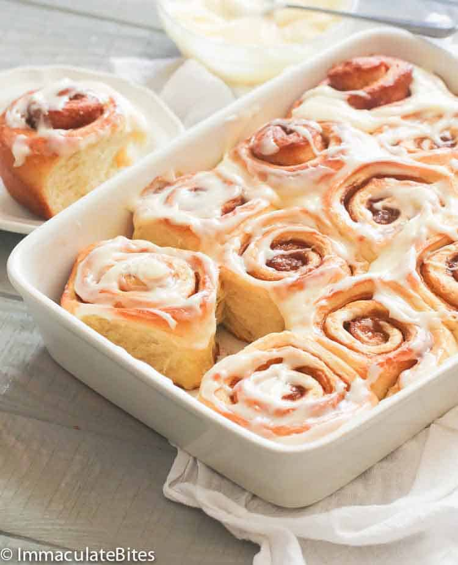

Cinammon Bread

Description
This cinnamon quick bread has a sweet cinnamon topping that's swirled into the batter for a marbled effect. It's a delicious way to start your morning!
Ingredients
- vegetable oil
- vanilla extract
- baking powder
- ground cinnamon
- salt
- baking soda
- white sugar
- butter or margarine
- ground cinnamon
Steps
- Make the batter and pour it into a prepared loaf pan.
- Make the topping and sprinkle it over the batter.
- Use a paring knife to swirl batter for a marbled effect.
- Bake until a toothpick comes out clean.